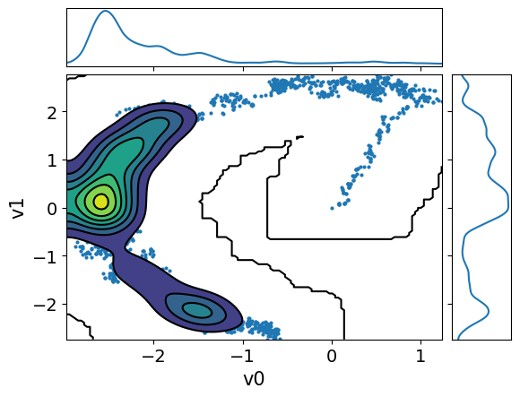
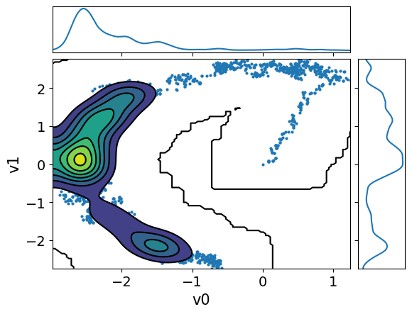

\(\gdef\dd{\mathrm{d}}\)
\(\gdef\abs#1{\left\vert#1\right\vert}\)
\(\gdef\ve#1{\bm{#1}}\)
\(\gdef\mat#1{\mathbf{#1}}\)
Sampling with CUQIpy: five little stories#
Show code cell content
from cuqi.distribution import DistributionGallery, Gaussian, JointDistribution
from cuqi.testproblem import Poisson1D
from cuqi.problem import BayesianProblem
import cuqi
import inspect
import numpy as np
import matplotlib.pyplot as plt
from cuqi.sampler import MH, CWMH, ULA, MALA, NUTS
import time
import scipy.stats as sps
from scipy.stats import gaussian_kde
The two targets, again #
Here we will add the code for building the two targets that we discussed in the previous notebook. The details of the two targets can be found in that notebook. After running the following (hidden) code cell, we will have the two targets ready for sampling:
The donut target
target_donut(distribution)The Poisson 1D target
target_poisson(posterior)
Show code cell content
# The donut distribution
target_donut = DistributionGallery("donut")
# The Poisson1D Bayesian problem
dim = 201
L = np.pi
xs = np.array([0.2, 0.4, 0.6, 0.8])*L
ws = 0.8
sigma_s = 0.05
def f(t):
s = np.zeros(dim-1)
for i in range(4):
s += ws * sps.norm.pdf(t, loc=xs[i], scale=sigma_s)
return s
A, _, _ = Poisson1D(dim=dim,
endpoint=L,
field_type='KL',
field_params={'num_modes': 10} ,
map=lambda x: np.exp(x),
source=f).get_components()
sigma_x = 30
x = Gaussian(0, sigma_x**2, geometry=A.domain_geometry)
np.random.seed(12)
x_true = x.sample()
sigma_y = np.sqrt(0.001)
y = Gaussian(A(x), sigma_y**2, geometry=A.range_geometry)
y_obs = y(x=x_true).sample()
joint = JointDistribution(y, x)
target_poisson = joint(y=y_obs)
The in the following (hidden) code cell we again define the method plot_pdf_1D and plot_pdf_2D for plotting univariate and bi-variate pdfs. We have used these method before in a previous notebook.
Show code cell content
def plot2d(val, x1_min, x1_max, x2_min, x2_max, N2=201, **kwargs):
# plot
pixelwidth_x = (x1_max-x1_min)/(N2-1)
pixelwidth_y = (x2_max-x2_min)/(N2-1)
hp_x = 0.5*pixelwidth_x
hp_y = 0.5*pixelwidth_y
extent = (x1_min-hp_x, x1_max+hp_x, x2_min-hp_y, x2_max+hp_y)
plt.imshow(val, origin='lower', extent=extent, **kwargs)
plt.colorbar()
def plot_pdf_2D(distb, x1_min, x1_max, x2_min, x2_max, N2=201, **kwargs):
N2 = 201
ls1 = np.linspace(x1_min, x1_max, N2)
ls2 = np.linspace(x2_min, x2_max, N2)
grid1, grid2 = np.meshgrid(ls1, ls2)
distb_pdf = np.zeros((N2,N2))
for ii in range(N2):
for jj in range(N2):
distb_pdf[ii,jj] = np.exp(distb.logd(np.array([grid1[ii,jj], grid2[ii,jj]])))
plot2d(distb_pdf, x1_min, x1_max, x2_min, x2_max, N2, **kwargs)
def plot_pdf_1D(distb, min, max, **kwargs):
grid = np.linspace(min, max, 1000)
y = [distb.pdf(grid_point) for grid_point in grid]
plt.plot(grid, y, **kwargs)
Sampling the posterior #
After defining the posterior distribution (or a target distribution in general) for the parameters of interest \(\mathbf{x}\), we can characterize the parameter and its uncertainty by samples from the posterior (target) distribution. However, in general the posterior (target) is not a simple distribution that we can easily sample from. Instead, we need to rely on Markov Chain Monte Carlo (MCMC) methods to sample from the posterior.
In CUQIpy, a number of MCMC samplers are provided in the sampler module that can be used to sample probability distributions. All samplers have the same signature, namely Sampler(target, ...), where target is the target CUQIpy distribution and ... indicates any (optional) arguments.
In CUQIpy we have a number of samplers available, that we can list using:
[sampler for sampler in dir(cuqi.sampler) if not sampler.startswith('_')]
['CWMH',
'Conjugate',
'ConjugateApprox',
'Gibbs',
'LinearRTO',
'MALA',
'MH',
'NUTS',
'ProposalBasedSampler',
'RegularizedLinearRTO',
'Sampler',
'UGLA',
'ULA',
'pCN']
Note that there is also the experimental mcmc module that has a new implementation of the samplers. This module is still under development and is aim to replace the current sampler module. We can list the samplers in the mcmc module using:
# This code needs the latest development version of cuqipy to run
# [samplerNew for samplerNew in dir(cuqi.experimental.mcmc) if not samplerNew.startswith('_')]
Story 1 - It pays off to adapt: Comparing Metropolis Hastings (MH) with and without adaptation #
In the class, you learned about MH method.
In MH, for each iteration, a new sample is proposed based on the current sample (essintially adding a random perturbation to the corrent sample).
Then the porposed sample is accepted or rejected based on the acceptance probability: \(\min\left(1, \frac{p(\mathbf{x}_{k+1})q(\mathbf{x}_k|\mathbf{x}_{k+1})}{p(\mathbf{x}_k)q(\mathbf{x}_{k+1}|\mathbf{x}_k)}\right)\), where \(p(\mathbf{x})\) is the target distribution and \(q(\mathbf{x}|\mathbf{y})\) is the proposal distribution.
Here we test the MH method with and without adaptation.
For adaptation, MH uses vanishing adaptation to set the step size (scale) to achieve a desired acceptance rate (0.234 in this case).
Let us sample the target_donut with a fixed scale. We first set up the number of samples, number of burn-in samples, and the fixed scale.
Ns = 10000 # Number of samples
Nb = 0 # Number of burn-in samples
scale = 0.05 # Fixed step size "scale"
We create the MH sampler with the target distribution target_donut, the scale scale and an initial sample x0.
MH_sampler = MH(target_donut, scale=scale, x0=np.array([0,0]))
We sample using sample method:
MH_fixed_samples = MH_sampler.sample(Ns, Nb)
Sample 100 / 10000
Sample 200 / 10000
Sample 300 / 10000
Sample 400 / 10000
Sample 500 / 10000
Sample 600 / 10000
Sample 700 / 10000
Sample 800 / 10000
Sample 900 / 10000
Sample 1000 / 10000
Sample 1100 / 10000
Sample 1200 / 10000
Sample 1300 / 10000
Sample 1400 / 10000
Sample 1500 / 10000
Sample 1600 / 10000
Sample 1700 / 10000
Sample 1800 / 10000
Sample 1900 / 10000
Sample 2000 / 10000
Sample 2100 / 10000
Sample 2200 / 10000
Sample 2300 / 10000
Sample 2400 / 10000
Sample 2500 / 10000
Sample 2600 / 10000
Sample 2700 / 10000
Sample 2800 / 10000
Sample 2900 / 10000
Sample 3000 / 10000
Sample 3100 / 10000
Sample 3200 / 10000
Sample 3300 / 10000
Sample 3400 / 10000
Sample 3500 / 10000
Sample 3600 / 10000
Sample 3700 / 10000
Sample 3800 / 10000
Sample 3900 / 10000
Sample 4000 / 10000
Sample 4100 / 10000
Sample 4200 / 10000
Sample 4300 / 10000
Sample 4400 / 10000
Sample 4500 / 10000
Sample 4600 / 10000
Sample 4700 / 10000
Sample 4800 / 10000
Sample 4900 / 10000
Sample 5000 / 10000
Sample 5100 / 10000
Sample 5200 / 10000
Sample 5300 / 10000
Sample 5400 / 10000
Sample 5500 / 10000
Sample 5600 / 10000
Sample 5700 / 10000
Sample 5800 / 10000
Sample 5900 / 10000
Sample 6000 / 10000
Sample 6100 / 10000
Sample 6200 / 10000
Sample 6300 / 10000
Sample 6400 / 10000
Sample 6500 / 10000
Sample 6600 / 10000
Sample 6700 / 10000
Sample 6800 / 10000
Sample 6900 / 10000
Sample 7000 / 10000
Sample 7100 / 10000
Sample 7200 / 10000
Sample 7300 / 10000
Sample 7400 / 10000
Sample 7500 / 10000
Sample 7600 / 10000
Sample 7700 / 10000
Sample 7800 / 10000
Sample 7900 / 10000
Sample 8000 / 10000
Sample 8100 / 10000
Sample 8200 / 10000
Sample 8300 / 10000
Sample 8400 / 10000
Sample 8500 / 10000
Sample 8600 / 10000
Sample 8700 / 10000
Sample 8800 / 10000
Sample 8900 / 10000
Sample 9000 / 10000
Sample 9100 / 10000
Sample 9200 / 10000
Sample 9300 / 10000
Sample 9400 / 10000
Sample 9500 / 10000
Sample 9600 / 10000
Sample 9700 / 10000
Sample 9800 / 10000
Sample 9900 / 10000
Sample 10000 / 10000
Sample 10000 / 10000
Average acceptance rate: 0.8742
The samples are stored in a Samples object that is returned by the sample method. Let us visualize the samples using the plot_pair method, along with the density of the target distribution using the plot_pdf_2D method:
plot_pdf_2D(target_donut, -4, 4, -4, 4)
MH_fixed_samples.plot_pair(ax=plt.gca())
/tmp/ipykernel_2147/1564103046.py:23: DeprecationWarning: Conversion of an array with ndim > 0 to a scalar is deprecated, and will error in future. Ensure you extract a single element from your array before performing this operation. (Deprecated NumPy 1.25.)
distb_pdf[ii,jj] = np.exp(distb.logd(np.array([grid1[ii,jj], grid2[ii,jj]])))
<Axes: xlabel='v0', ylabel='v1'>
Observations
The samples captures only part of the target distribution.
Once the chain reaches the high density region, it stays there.
The samples starts at the center and takes some time to move to the donut shape. This part of the chain is the burn-in phase.
Exercise: #
In CUQIpy we can remove the burin in in two ways. The first approach is to set Nb to the number of samples you want to remove. The second approach is after you already have the samples, you can use the
Samplesobjectburnthinmethod which removes the burn-in and applies thinning if the user asked for it. Try the second approach to remove a burn-in of size 1500 samples and plot the samples again (same as above, visualize both the density usingplot_pdf_2Dand the samples using theplot_pairmethod).Try sampling with another scale (much smaller 0.005 and much larger 1) and visualize the samples, how does that affect the samples and the acceptance rate, and why.
# your code here
Now we try the solving the same problem with adaptation. We make sure to set the scale to the previous value 0.05.
MH_sampler.scale = 0.05
Then we sample this time using sample_adapt method which adapts the step size. Note that the adaptation happen during the burin-in phase so we need to set Nb to some large value to see the effect of adaptation.
Ns = 8500
Nb = 1500
MH_adapted_samples = MH_sampler.sample_adapt(Ns, Nb)
Sample 100 / 10000
Sample 200 / 10000
Sample 300 / 10000
Sample 400 / 10000
Sample 500 / 10000
Sample 600 / 10000
Sample 700 / 10000
Sample 800 / 10000
Sample 900 / 10000
Sample 1000 / 10000
Sample 1100 / 10000
Sample 1200 / 10000
Sample 1300 / 10000
Sample 1400 / 10000
Sample 1500 / 10000
Sample 1600 / 10000
Sample 1700 / 10000
Sample 1800 / 10000
Sample 1900 / 10000
Sample 2000 / 10000
Sample 2100 / 10000
Sample 2200 / 10000
Sample 2300 / 10000
Sample 2400 / 10000
Sample 2500 / 10000
Sample 2600 / 10000
Sample 2700 / 10000
Sample 2800 / 10000
Sample 2900 / 10000
Sample 3000 / 10000
Sample 3100 / 10000
Sample 3200 / 10000
Sample 3300 / 10000
Sample 3400 / 10000
Sample 3500 / 10000
Sample 3600 / 10000
Sample 3700 / 10000
Sample 3800 / 10000
Sample 3900 / 10000
Sample 4000 / 10000
Sample 4100 / 10000
Sample 4200 / 10000
Sample 4300 / 10000
Sample 4400 / 10000
Sample 4500 / 10000
Sample 4600 / 10000
Sample 4700 / 10000
Sample 4800 / 10000
Sample 4900 / 10000
Sample 5000 / 10000
Sample 5100 / 10000
Sample 5200 / 10000
Sample 5300 / 10000
Sample 5400 / 10000
Sample 5500 / 10000
Sample 5600 / 10000
Sample 5700 / 10000
Sample 5800 / 10000
Sample 5900 / 10000
Sample 6000 / 10000
Sample 6100 / 10000
Sample 6200 / 10000
Sample 6300 / 10000
Sample 6400 / 10000
Sample 6500 / 10000
Sample 6600 / 10000
Sample 6700 / 10000
Sample 6800 / 10000
Sample 6900 / 10000
Sample 7000 / 10000
Sample 7100 / 10000
Sample 7200 / 10000
Sample 7300 / 10000
Sample 7400 / 10000
Sample 7500 / 10000
Sample 7600 / 10000
Sample 7700 / 10000
Sample 7800 / 10000
Sample 7900 / 10000
Sample 8000 / 10000
Sample 8100 / 10000
Sample 8200 / 10000
Sample 8300 / 10000
Sample 8400 / 10000
Sample 8500 / 10000
Sample 8600 / 10000
Sample 8700 / 10000
Sample 8800 / 10000
Sample 8900 / 10000
Sample 9000 / 10000
Sample 9100 / 10000
Sample 9200 / 10000
Sample 9300 / 10000
Sample 9400 / 10000
Sample 9500 / 10000
Sample 9600 / 10000
Sample 9700 / 10000
Sample 9800 / 10000
Sample 9900 / 10000
Sample 10000 / 10000
Sample 10000 / 10000
Average acceptance rate: 0.5038823529411764 MCMC scale: 0.38003425321366907
Here we visualize the results (both the ones with and without adaptation). We set the color of the samples and the transparency alpha using the arviz argument scatter_kwargs:
plot_pdf_2D(target_donut, -4, 4, -4, 4)
MH_fixed_samples.plot_pair(ax=plt.gca(),scatter_kwargs={'c':'b', 'alpha':0.3})
MH_adapted_samples.plot_pair(ax=plt.gca(),scatter_kwargs={'c':'r', 'alpha':0.3})
/tmp/ipykernel_2147/1564103046.py:23: DeprecationWarning: Conversion of an array with ndim > 0 to a scalar is deprecated, and will error in future. Ensure you extract a single element from your array before performing this operation. (Deprecated NumPy 1.25.)
distb_pdf[ii,jj] = np.exp(distb.logd(np.array([grid1[ii,jj], grid2[ii,jj]])))
<Axes: xlabel='v0', ylabel='v1'>
Exercise: #
What do you notice about the acceptance rate and the scale in the case with adaptation compared to the previous case.
Time the two sampling methods, which one is faster and by what factor?
Compute the effective sample size for both cases. Note that you can use
compute_essmethod of theSamplesobject to compute the effective sample size. Which one is larger.Scale the ESS by the time so that you have the ESS per second. Which one is larger? Does it pay off to use adaptation?
# your code here
Let us plot the chains for the two cases, removing the burin-in from the fixed scale case:
MH_fixed_samples.burnthin(Nb).plot_trace()
MH_adapted_samples.plot_trace()
array([[<Axes: title={'center': 'v0'}>, <Axes: title={'center': 'v0'}>],
[<Axes: title={'center': 'v1'}>, <Axes: title={'center': 'v1'}>]],
dtype=object)
Notes
The chains in the second case (with adaptation) has much better mixing compared to the first case (closer to a fuzzy warm shape).
The estimate density of the target distribution is much better in the second case, captures the 2 modes.
We can also use plot_pair with additional arviz arguments kind, kde_kwargs, and marginals to visualize the marginals and the kernel density estimate of the target distribution. Let us do this for the two cases:
MH_adapted_samples.plot_pair(kind=["scatter", "kde"], kde_kwargs={"fill_last": False}, marginals=True)
MH_fixed_samples.plot_pair(kind=["scatter", "kde"], kde_kwargs={"fill_last": False}, marginals=True)
array([[<Axes: >, None],
[<Axes: xlabel='v0', ylabel='v1'>, <Axes: >]], dtype=object)
 

It is clear from these figures how using adaptation of the step size is very beneficial to capture the target distribution in this scenario.
Story 2 - Not all unkowns are created equal: Component-wise Metropolis Hastings CWMH #
To get to the next sample, CWMH updates the components of the current sample one at a time and applies the accept/reject step for each component. Updating the scale happens for each component separately depending on the acceptance rate of the component.
Let us test sampling the Poisson problem target with CWMH. We fix the seed for reproducibility and set the number of samples, burn-in samples, and the scale.
np.random.seed(0) # Fix the seed for reproducibility
scale = 0.06
Ns = 500
Nb = 500
For comparison, we sample the Poisson problem target with the MH sampler first:
MH_sampler = MH(target_poisson, scale = scale, x0=np.ones(target_poisson.dim))
MH_samples = MH_sampler.sample_adapt(Ns, Nb)
Sample 10 / 1000
Sample 20 / 1000
Sample 30 / 1000
Sample 40 / 1000
Sample 50 / 1000
Sample 60 / 1000
Sample 70 / 1000
Sample 80 / 1000
Sample 90 / 1000
Sample 100 / 1000
Sample 110 / 1000
Sample 120 / 1000
Sample 130 / 1000
Sample 140 / 1000
Sample 150 / 1000
Sample 160 / 1000
Sample 170 / 1000
Sample 180 / 1000
Sample 190 / 1000
Sample 200 / 1000
Sample 210 / 1000
Sample 220 / 1000
Sample 230 / 1000
Sample 240 / 1000
Sample 250 / 1000
Sample 260 / 1000
Sample 270 / 1000
Sample 280 / 1000
Sample 290 / 1000
Sample 300 / 1000
Sample 310 / 1000
Sample 320 / 1000
Sample 330 / 1000
Sample 340 / 1000
Sample 350 / 1000
Sample 360 / 1000
Sample 370 / 1000
Sample 380 / 1000
Sample 390 / 1000
Sample 400 / 1000
Sample 410 / 1000
Sample 420 / 1000
Sample 430 / 1000
Sample 440 / 1000
Sample 450 / 1000
Sample 460 / 1000
Sample 470 / 1000
Sample 480 / 1000
Sample 490 / 1000
Sample 500 / 1000
Sample 510 / 1000
Sample 520 / 1000
Sample 530 / 1000
Sample 540 / 1000
Sample 550 / 1000
Sample 560 / 1000
Sample 570 / 1000
Sample 580 / 1000
Sample 590 / 1000
Sample 600 / 1000
Sample 610 / 1000
Sample 620 / 1000
Sample 630 / 1000
Sample 640 / 1000
Sample 650 / 1000
Sample 660 / 1000
Sample 670 / 1000
Sample 680 / 1000
Sample 690 / 1000
Sample 700 / 1000
Sample 710 / 1000
Sample 720 / 1000
Sample 730 / 1000
Sample 740 / 1000
Sample 750 / 1000
Sample 760 / 1000
Sample 770 / 1000
Sample 780 / 1000
Sample 790 / 1000
Sample 800 / 1000
Sample 810 / 1000
Sample 820 / 1000
Sample 830 / 1000
Sample 840 / 1000
Sample 850 / 1000
Sample 860 / 1000
Sample 870 / 1000
Sample 880 / 1000
Sample 890 / 1000
Sample 900 / 1000
Sample 910 / 1000
Sample 920 / 1000
Sample 930 / 1000
Sample 940 / 1000
Sample 950 / 1000
Sample 960 / 1000
Sample 970 / 1000
Sample 980 / 1000
Sample 990 / 1000
Sample 1000 / 1000
Sample 1000 / 1000
Average acceptance rate: 0.398 MCMC scale: 0.3483149498237104
Then we create a CWMH sampler with the target distribution target_poisson, the scale scale and an initial sample x0 and sample from it.
CWMH_sampler = CWMH(target_poisson, scale = scale, x0=np.ones(target_poisson.dim))
CWMH_samples = CWMH_sampler.sample_adapt(Ns, Nb)
Sample 10 / 1000
Sample 20 / 1000
Sample 30 / 1000
Sample 40 / 1000
Sample 50 / 1000
Sample 60 / 1000
Sample 70 / 1000
Sample 80 / 1000
Sample 90 / 1000
Sample 100 / 1000
Sample 110 / 1000
Sample 120 / 1000
Sample 130 / 1000
Sample 140 / 1000
Sample 150 / 1000
Sample 160 / 1000
Sample 170 / 1000
Sample 180 / 1000
Sample 190 / 1000
Sample 200 / 1000
Sample 210 / 1000
Sample 220 / 1000
Sample 230 / 1000
Sample 240 / 1000
Sample 250 / 1000
Sample 260 / 1000
Sample 270 / 1000
Sample 280 / 1000
Sample 290 / 1000
Sample 300 / 1000
Sample 310 / 1000
Sample 320 / 1000
Sample 330 / 1000
Sample 340 / 1000
Sample 350 / 1000
Sample 360 / 1000
Sample 370 / 1000
Sample 380 / 1000
Sample 390 / 1000
Sample 400 / 1000
Sample 410 / 1000
Sample 420 / 1000
Sample 430 / 1000
Sample 440 / 1000
Sample 450 / 1000
Sample 460 / 1000
Sample 470 / 1000
Sample 480 / 1000
Sample 490 / 1000
Sample 500 / 1000
Sample 510 / 1000
Sample 520 / 1000
Sample 530 / 1000
Sample 540 / 1000
Sample 550 / 1000
Sample 560 / 1000
Sample 570 / 1000
Sample 580 / 1000
Sample 590 / 1000
Sample 600 / 1000
Sample 610 / 1000
Sample 620 / 1000
Sample 630 / 1000
Sample 640 / 1000
Sample 650 / 1000
Sample 660 / 1000
Sample 670 / 1000
Sample 680 / 1000
Sample 690 / 1000
Sample 700 / 1000
Sample 710 / 1000
Sample 720 / 1000
Sample 730 / 1000
Sample 740 / 1000
Sample 750 / 1000
Sample 760 / 1000
Sample 770 / 1000
Sample 780 / 1000
Sample 790 / 1000
Sample 800 / 1000
Sample 810 / 1000
Sample 820 / 1000
Sample 830 / 1000
Sample 840 / 1000
Sample 850 / 1000
Sample 860 / 1000
Sample 870 / 1000
Sample 880 / 1000
Sample 890 / 1000
Sample 900 / 1000
Sample 910 / 1000
Sample 920 / 1000
Sample 930 / 1000
Sample 940 / 1000
Sample 950 / 1000
Sample 960 / 1000
Sample 970 / 1000
---------------------------------------------------------------------------
KeyboardInterrupt Traceback (most recent call last)
Cell In[19], line 2
1 CWMH_sampler = CWMH(target_poisson, scale = scale, x0=np.ones(target_poisson.dim))
----> 2 CWMH_samples = CWMH_sampler.sample_adapt(Ns, Nb)
File ~/.local/lib/python3.10/site-packages/cuqi/sampler/_sampler.py:96, in Sampler.sample_adapt(self, N, Nb)
94 def sample_adapt(self,N,Nb=0):
95 # Get samples from the samplers sample method
---> 96 result = self._sample_adapt(N,Nb)
97 return self._create_Sample_object(result,N+Nb)
File ~/.local/lib/python3.10/site-packages/cuqi/sampler/_cwmh.py:135, in CWMH._sample_adapt(self, N, Nb)
132 # run MCMC
133 for s in range(Ns-1):
134 # run component by component
--> 135 samples[:, s+1], target_eval[s+1], acc[:, s+1] = self.single_update(samples[:, s], target_eval[s])
137 # adapt prop spread of each component using acc of past samples
138 if ((s+1) % Na == 0):
139 # evaluate average acceptance rate
File ~/.local/lib/python3.10/site-packages/cuqi/sampler/_cwmh.py:178, in CWMH.single_update(self, x_t, target_eval_t)
175 x_star[j] = x_i_star[j]
177 # evaluate target
--> 178 target_eval_star = self.target.logd(x_star)
180 # ratio and acceptance probability
181 ratio = target_eval_star - target_eval_t # proposal is symmetric
File ~/.local/lib/python3.10/site-packages/cuqi/distribution/_distribution.py:188, in Distribution.logd(self, *args, **kwargs)
184 return new_dist.logd(**main_params)
186 # Not conditional distribution, simply evaluate log density directly
187 else:
--> 188 return super().logd(*args, **kwargs)
File ~/.local/lib/python3.10/site-packages/cuqi/density/_density.py:91, in Density.logd(self, *args, **kwargs)
88 # Ensure that the keyword arguments are given in the correct order and use them as positional arguments.
89 args = [kwargs[name] for name in par_names]
---> 91 return self._logd(*args) + self._constant
File ~/.local/lib/python3.10/site-packages/cuqi/distribution/_distribution.py:191, in Distribution._logd(self, *args)
190 def _logd(self, *args):
--> 191 return self.logpdf(*args)
File ~/.local/lib/python3.10/site-packages/cuqi/distribution/_posterior.py:86, in Posterior.logpdf(self, *args, **kwargs)
84 def logpdf(self, *args, **kwargs):
85 """ Returns the logpdf of the posterior distribution"""
---> 86 return self.likelihood.logd(*args, **kwargs)+ self.prior.logd(*args, **kwargs)
File ~/.local/lib/python3.10/site-packages/cuqi/density/_density.py:91, in Density.logd(self, *args, **kwargs)
88 # Ensure that the keyword arguments are given in the correct order and use them as positional arguments.
89 args = [kwargs[name] for name in par_names]
---> 91 return self._logd(*args) + self._constant
File ~/.local/lib/python3.10/site-packages/cuqi/likelihood/_likelihood.py:62, in Likelihood._logd(self, *args, **kwargs)
60 def _logd(self, *args, **kwargs):
61 """Return the log-likelihood function at given value"""
---> 62 return self.distribution(*args, **kwargs).logd(self.data)
File ~/.local/lib/python3.10/site-packages/cuqi/distribution/_distribution.py:328, in Distribution.__call__(self, *args, **kwargs)
327 def __call__(self, *args, **kwargs) -> Union[Distribution, Likelihood, EvaluatedDensity]:
--> 328 return super().__call__(*args, **kwargs)
File ~/.local/lib/python3.10/site-packages/cuqi/density/_density.py:141, in Density.__call__(self, *args, **kwargs)
132 def __call__(self, *args, **kwargs):
133 """ Condition the density on a set of parameters.
134
135 Positional arguments must follow the order of the parameter names.
(...)
139
140 """
--> 141 return self._condition(*args, **kwargs)
File ~/.local/lib/python3.10/site-packages/cuqi/distribution/_distribution.py:290, in Distribution._condition(self, *args, **kwargs)
287 # If any keywords matched we evaluate callable variable
288 if len(var_args)==len(accepted_keywords): #All keywords found
289 # Define variable as the output of callable function
--> 290 setattr(new_dist, var_key, var_val(**var_args))
292 elif len(var_args)>0: #Some keywords found
293 # Define new partial function with partially defined args
294 func = partial(var_val, **var_args)
File ~/.local/lib/python3.10/site-packages/cuqi/model/_model.py:361, in Model.__call__(self, *args, **kwargs)
360 def __call__(self, *args, **kwargs):
--> 361 return self.forward(*args, **kwargs)
File ~/.local/lib/python3.10/site-packages/cuqi/model/_model.py:355, in Model.forward(self, is_par, *args, **kwargs)
352 return new_model
354 # Else we apply the forward operator
--> 355 return self._apply_func(self._forward_func,
356 self.range_geometry,
357 self.domain_geometry,
358 x, is_par)
File ~/.local/lib/python3.10/site-packages/cuqi/model/_model.py:285, in Model._apply_func(self, func, func_range_geometry, func_domain_geometry, x, is_par, **kwargs)
282 is_CUQIarray = type(x) is CUQIarray
284 x = self._2fun(x, func_domain_geometry, is_par=is_par)
--> 285 out = func(x, **kwargs)
287 # Return output as parameters
288 # (and wrapped in CUQIarray if input was CUQIarray)
289 return self._2par(out, func_range_geometry,
290 to_CUQIarray=is_CUQIarray)
File ~/.local/lib/python3.10/site-packages/cuqi/model/_model.py:665, in PDEModel._forward_func(self, x)
663 def _forward_func(self, x):
--> 665 self.pde.assemble(parameter=x)
667 sol, info = self.pde.solve()
669 obs = self.pde.observe(sol)
File ~/.local/lib/python3.10/site-packages/cuqi/pde/_pde.py:160, in SteadyStateLinearPDE.assemble(self, parameter)
158 def assemble(self, parameter):
159 """Assembles differential operator and rhs according to PDE_form"""
--> 160 self.diff_op, self.rhs = self.PDE_form(parameter)
KeyboardInterrupt:
Note that we use adaptation in both cases. Let us visualize the credible intervals in both cases: for MH
MH_samples.plot_ci(exact=x_true)
And for CWMH
CWMH_samples.plot_ci(exact=x_true)
Exercise: #
We mentioned in the previous notebook that the credible interval (CI) visualized here is computed on the KL coefficients and then mapped to the function values (through computing the linear combination of the KL basis weighted by the KL coefficients and applying the map \(x \rightarrow e^x \)). We are interested in mapping all the samples to the function values and then computing the credible interval. To achieve this in CUQIpy, one can use the property
funvalsof theSamplesobject. This property returns the function values of the samples wrapped in anotherSamplesobject. Use this property to create theSamplesobjects of function valuesMH_samples_funvalsandCWMH_samples_funvalsand then compute the credible interval on these newSamplesobject. Do this for both cases, theMHand theCWMHcases. Which sampler resulted in samples with a better credible interval?Which approach of visualizing the credible interval do you prefer (mapping then computing the CI or the other way around)? Why?
Visualize the credible interval for both cases in the coefficient space. To achieve this in CUQIpy, pass the argument
plot_par=Trueto theplot_cimethod. What do you notice? what do you observe about the credible intervals in the coefficient space as the coefficient index increases? Hint: use the originalMH_samplesandCWMH_samplesobjects and not the ones converted to function values. Which sampler performs better in the coefficient space?Plot the effictive sample size for both cases in the same plot (where the \(x-\text{axis}\) is the sample index and the \(y-\text{axis}\) is the effective sample size). What do you notice? Hint: use the
compute_essmethod of theSamplesobject to compute the effective sample size.Plot the sampler scale for both cases in the same plot (the \(x-\text{axis}\) is the sample index and the \(y-\text{axis}\) is the scale). What do you notice? Hint: you can use
CWMH_sampler.scaleandMH_sampler.scaleto get the scale for each sampler. Keep in mind that the scale for theMHsampler is the same for all components.
# your code here
Story 3 - May the force guide you: Unadjusted Langevin algorithm (ULA) #
In the Unadjusted Langevin algorithm (ULA), new states are proposed using (overdamped) Langevin dynamics.
Let \(p\) denote a probability density on \(\mathbb{R}^d\), from which it is desired to draw an ensemble of i.i.d. samples. We consider the overdamped Langevin Itô diffusion
driven by the time derivative of a standard Brownian motion \(W\) and force given as gradient of a potential \(\log p(\boldsymbol{x}_t)\).
In the limit, as \(t\to\infty\), the probability distribution of \(X(t)\) approaches a stationary distribution, which is also invariant under the diffusion. It turns out that this distribution is \(p\).
Approximate sample paths of the Langevin diffusion can be generated by the Euler–Maruyama method with a fixed time step \(\varepsilon>0\). We set \(\boldsymbol{x}_{0}\) and then recursively define an approximation to the true solution by
where each \(\boldsymbol{\xi}_k\sim\mathcal{N}(\boldsymbol{0},\boldsymbol{I}_d)\).
Let us create the ULA sampler in CUQIpy with the target distribution target_donuts, a fixed scale scale, and an initial sample x0:
ULA_sampler = ULA(target=target_donut, scale=0.065, x0=np.array([0,0]))
We set the number of samples, and sample the target distribution using the sample method:
Ns = 1000
ULA_samples = ULA_sampler.sample(Ns)
And visualize the samples using the plot_pair method:
plot_pdf_2D(target_donut, -4, 4, -4, 4)
ULA_samples.plot_pair(ax=plt.gca(), scatter_kwargs={'alpha': 1})
We note that the samples are all over the domain and do not capture the target distribution. This is because the ULA sampler will result in approximate (biased) distribution that as \(\varepsilon \rightarrow 0\) will converge to \(p(\mathbf{x})\).
Exercise: #
Try a different scales 0.01 and visualize the samples in the same way as above. What do you notice about the samples? does it capture the target distribution?
Using the new scale 0.01, sample only 10 samples. Using this scale as well, generate 10 MH samples using a MH sampler
MH_10 = MH(target_donut, scale=0.01, x0=np.array([0, 0])). Visualize the samples of both samplers using theplot_pairmethod (along with the pdf plotplot_pdf_2D(target_donut, -4, 4, -4, 4)). What do you notice about the samples of the two samplers in terms of finding the high density region of the target distribution?Try ULA for a univariate target distribution
x_uni = Gaussian(0, 1):Create an ULA sampler object
ULA_unifor the target distributionx_uniwith scale 1 and initial sample 0.Generate 40000 samples and store it in
ULA_samples_uni.Compare the kernel density estimation (KDE) of the samples with the target distribution
x_uniPDF. What do you notice? does the KDE capture the target distribution? Hint: to plot the PDE use theplot_pdf_1Dmethod and to plot the KDE generate a KDE using scipy.stats gaussian_kde (already imported here)kde_est = gaussian_kde(ULA_samples_uni.samples[0,:]), then create a gridgrid = np.linspace(-4, 4, 1000)and plot the KDE usingplt.plot(grid, kde_est(grid)).Try a different scale 0.1 and repeat the above steps. What do you notice about the samples KDE? does it capture the target distribution?
# your code here
Story 4: This is a bias we can fix - Metropolis-adjusted Langevin algorithm (MALA) #
In contrast to the Euler–Maruyama method for simulating the Langevin diffusion. MALA incorporates an additional step. We consider the above update rule as defining a proposal \(\tilde{\boldsymbol{x}}\) for a new state:
this proposal is accepted or rejected according to the MH algorithm.
That is, the acceptance probability is:
where the proposal has the form
The combined dynamics of the Langevin diffusion and the MH algorithm satisfy the detailed balance conditions necessary for the existence of a unique, invariant, stationary distribution.
For limited classes of target distributions, the optimal acceptance rate for this algorithm can be shown to be \(0.574\); this can be used to tune \(\varepsilon\).
Let us get back to the uni-variate Gaussian target distribution x_uni that was suggested in the exercise of the previous section. We saw that when the scale was 1, the resulting samples did not capture the target distribution, but an appreciably different one, which shows the bias in ULA.
We will now use MALA to sample from this target distribution. Let us create x_uni first:
x_uni = Gaussian(0, 1)
Then we create a MALA sampler object MALA_uni for the target distribution x_uni with scale 1 and initial sample 0 and sample from it:
MALA_uni = MALA(x_uni, scale=1, x0=0)
Ns = 40000
ULA_samples_uni = MALA_uni.sample(Ns)
Lastly, we visualize the KDE obtained from samples along with the target distribution PDF:
plot_pdf_1D(x_uni, -4, 4, label='True')
grid = np.linspace(-4, 4, 1000)
kde_est = gaussian_kde(ULA_samples_uni.samples[0,:])
plt.plot(grid, kde_est(grid), label='Estimated')
plt.legend()
We notice in this case that the KDE of the samples captures the target distribution well. This is because MALA corrects the bias in ULA by using the MH acceptance step.
Story 5 - Sampling goes nuts with NUTS: Hamiltonian Monte Carlo (HMC) and No-U-Turn Sampler (NUTS) #
Hamiltonian Monte Carlo (HMC): use Hamiltonian dynamics to simulate particle trajectories.
Define a Hamiltonian function in terms of the target distribution.
Introduce an auxiliary momentum variables, which typically have independent Gaussian distributions.
Hamiltonian dynamics operate on a \(d\)-dimensional position vector \(\boldsymbol{x}\), and a \(d\)-dimensional momentum vector \(\boldsymbol{r}\), so that the full state space has \(2d\) dimensions. The system is described by a function of \(\boldsymbol{x}\) and \(\boldsymbol{r}\) known as the Hamiltonian \(H(\boldsymbol{x}, \boldsymbol{r})\).
In HMC, one uses Hamiltonian functions that can be written as (closed-system dynamics):
The potential energy is completely determined by the target distribution, indeed \(U(\boldsymbol{x})\) is equal to the logarithm of the target distribution \(p\).
The kinetic energy is unconstrained and must be specified by the implementation.
The Hamiltonian is an energy function for the joint state of position-momentum, and so defines a joint distribution for them as follows:
There are several ways to set the kinetic energy (density of the auxiliary momentum):
Euclidean–Gaussian kinetic energy: using a fixed covariance \(\boldsymbol{M}\) estimated from the position parameters, \(K(\boldsymbol{r},\boldsymbol{x}) = \dfrac{1}{2} \boldsymbol{r}^T\boldsymbol{M}^{-1}\boldsymbol{r} + \log( \abs{\boldsymbol{M}}) + \text{const}\).
Riemann–Gaussian kinetic energy: unlike the Euclidean metric, varies as one moves through parameter space, \(K(\boldsymbol{r}, \boldsymbol{x}) = \dfrac{1}{2} \boldsymbol{r}^T\boldsymbol{\Sigma}(\boldsymbol{x})^{-1}\boldsymbol{r} + \dfrac{1}{2}\log( \abs{\boldsymbol{\Sigma}(\boldsymbol{x})}) + \text{const}\).
Non-Gaussian kinetic energies.
Hamilton’s equations read as follows:
where \(\dfrac{\partial U}{\partial \boldsymbol{x}} = \dfrac{\partial \text{log}p(\boldsymbol{x})}{\partial \boldsymbol{x}}\) is the gradient of the logarithm of the target density.
Discretizing Hamilton’s equations:
Symplectic integrators: the leapfrog method (the standard choice).
Hamiltonian dynamics are time-reversible and volume-preserving.
The dynamics keep the Hamiltonian invariant. A Hamiltonian trajectory will (if simulated exactly) move within a hypersurface of constant probability density.
Each iteration of the HMC algorithm has two steps. Both steps leave the joint distribution of \(p(\boldsymbol{x}, \boldsymbol{r})\) invariant (detailed balance).
In the first step, new values of \(\boldsymbol{r}\) are randomly drawn from their Gaussian distribution, independently of the current \(\boldsymbol{x}\).
In the second step, a Metropolis update is performed, using Hamiltonian dynamics to propose a new state.
Optimal acceptance rate is 0.65. The step size \(\varepsilon\) and trajectory length \(L\) need to be tuned.
No-U-Turn sampler #
HMC is an algorithm that avoids the random walk behavior and sensitivity to correlated parameters that plague many MCMC methods by taking a series of steps informed by first-order gradient information.
However, HMC’s performance is highly sensitive to two user-specified parameters: a step size \(\varepsilon\) and a desired number of steps \(L\).
The No-U-Turn Sampler (NUTS), an extension to HMC that eliminates the need to set a number of steps \(L\), as well as the step-size.
We simulate in discrete time steps, and to make sure you explore the parameter space properly you simulate steps in one direction and the twice as many in the other direction, turn around again, etc. At some point you want to stop this and a good way of doing that is when you have done a U-turn (i.e., appear to have gone all over the place).
NUTS begins by introducing an auxiliary variable with conditional distribution. After re-sampling from this distribution, NUTS uses the leapfrog integrator to trace out a path forwards and backwards in fictitious time. First running forwards or backwards 1 step, then forwards or backwards 2 steps, then forwards or backwards 4 steps, etc.
This doubling process implicitly builds a balanced binary tree whose leaf nodes correspond to position-momentum state. The doubling is stopped when the subtrajectory from the leftmost to the rightmost nodes of any balanced subtree of the overall binary tree starts to double back on itself (i.e., the fictional particle starts to make a U-turn).
At this point NUTS stops the simulation and samples from among the set of points computed during the simulation, taking care to preserve detailed balance.
To adapt the step-size, NUTS uses a modified dual averaging algorithm during the burn-in phase.
The good thing about NUTS is that proposals are made based on the shape of the posterior and they can happend at the other end of the distribution. In contrast, MH makes proposals within a ball, and Gibbs sampling only moves along one (or at least very few) dimensions at a time.
Let us try the NUTS sampler in CUQIpy for the donut target distribution target_donut. We create the NUTS sampler object NUTS_donut for the target distribution target_donut with initial sample [0, 0]:
NUTS_donut = NUTS(target=target_donut, x0=np.array([0,0]))
We set the number of samples and burin-in and sample the target distribution: Note: for NUTS in CUQIpy, using sample or sample_adapt is the same. NUTS will always adapt if the number of burn-in samples is larger than 0 and the parameter adapt_step_size is passed as True, the later is a default behavior.
Ns = 100
Nb = 10
NUTS_donuts_samples = NUTS_donut.sample(Ns, Nb)
Let us visualize the samples using the plot_pair method over the target distribution PDF. We will also add connetions between the samples to visualize the path of the NUTS sampler:
plot_pdf_2D(target_donut, -4, 4, -4, 4)
NUTS_donuts_samples.plot_pair(ax=plt.gca(), scatter_kwargs={'alpha': 1, 'c': 'r'})
plt.plot(NUTS_donuts_samples.samples[0,:], NUTS_donuts_samples.samples[1,:], 'r', alpha=0.5)
We can see that NUTS can take rapid steps in exploring the target distribution. The samples are spread all over the domain and capture the target distribution efficiently.
Exercise: #
Compute the ESS of the NUTS samples and visualize the chain. What do you observe?
Generate a plot similar to the one above (showing samples and connections) but with samples generated from MALA using scale = 0.01. What do you notice about the samples of the two samplers in terms of exploring the target distribution?
Inspect how the step size in NUTS is adapted during the burn-in phase as well as the size of the tree that is built each step. Create a plot that visualizes both quantities over the sample index. What do you notice? Hint: you can use the properties
epsilon_listandnum_tree_node_listof theNUTS_donutobject to get, respectively, the step size and the tree size lists for the samples.
# your code here
Exercise: #
Try the NUTS sampler for the Poisson problem target
target_poisson:Enable finite difference approximation of the posterior gradient by calling
target_poisson.enable_FD()Create a NUTS sampler object
NUTS_poissonfor the target distributiontarget_poissonand limit the depth of the tree to 7 (usehelp(NUTS)to learn about the smapler paramters).Sample the target distribution using the
samplemethod setting Ns to 100 and Nb to 10 (sampling might take about 12 min).Visualize the credible interval of the samples along with the exact solution using the
plot_cimethod. How does the results compare to the MH and CWMH samplers we used earlier?Compute the ESS of the samples and comment on how they compare to the MH and CWMH cases.
Can you guess roughly how many times the forward operator was called?
# your code here
np.random.seed(0) # Fix the seed for reproducibility
We see that although the number of NUTS samples is much smaller than in the CWMH samples, the ESS is much larger. This however comes at a cost of computational time, which is due to building the tree structure in each iteration as well as the finite difference approximation of the gradient. Note that other approaches that are more computationally efficient can be used to compute the gradient of the target distribution, e.g. computing the adjoint-based gradient.